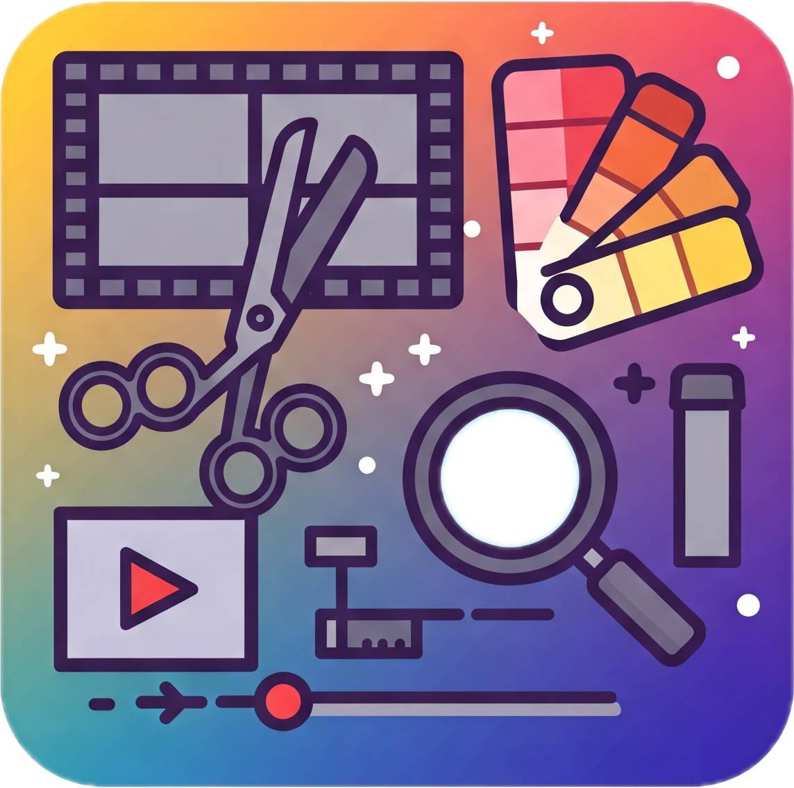

多种图文混排示例
教程
1. 左图右文（经典对称）

这里是文字说明，支持加粗、公式 $E=mc^2$、代码等。
- 支持列表
- 支持数学公式
- 支持代码块
2. 右图左文（变换节奏）
这里是文字内容，前文引导。
3. 图片环绕文字（float）
这段文字会自动环绕图片，适合故事叙述、长段文本说明。注意移动端时可能需要调整样式。
4. 多图并列 + 说明
多张图对比说明，适合展示细节或数据对比。
5. 图片居中 + 图注
6. 图片加圆角阴影
7. 文字上下分布，中间插图
第一段文字说明……
第二段文字说明……
8. 代码 + 图片并排（教程演示）
print("Hello, Quarto!")
:::{#quarto-navigation-envelope .hidden}
[果果的博客]{.hidden .quarto-markdown-envelope-contents render-id="cXVhcnRvLWludC1zaWRlYmFyLXRpdGxl"}
[果果的博客]{.hidden .quarto-markdown-envelope-contents render-id="cXVhcnRvLWludC1uYXZiYXItdGl0bGU="}
[首页]{.hidden .quarto-markdown-envelope-contents render-id="cXVhcnRvLWludC1uYXZiYXI66aaW6aG1"}
[/index.html]{.hidden .quarto-markdown-envelope-contents render-id="cXVhcnRvLWludC1uYXZiYXI6L2luZGV4Lmh0bWw="}
[分类]{.hidden .quarto-markdown-envelope-contents render-id="cXVhcnRvLWludC1uYXZiYXI65YiG57G7"}
[/categories.html]{.hidden .quarto-markdown-envelope-contents render-id="cXVhcnRvLWludC1uYXZiYXI6L2NhdGVnb3JpZXMuaHRtbA=="}
[所有文章]{.hidden .quarto-markdown-envelope-contents render-id="cXVhcnRvLWludC1uYXZiYXI65omA5pyJ5paH56ug"}
[/posts.html]{.hidden .quarto-markdown-envelope-contents render-id="cXVhcnRvLWludC1uYXZiYXI6L3Bvc3RzLmh0bWw="}
[标签]{.hidden .quarto-markdown-envelope-contents render-id="cXVhcnRvLWludC1uYXZiYXI65qCH562+"}
[/tags.html]{.hidden .quarto-markdown-envelope-contents render-id="cXVhcnRvLWludC1uYXZiYXI6L3RhZ3MuaHRtbA=="}
[关于]{.hidden .quarto-markdown-envelope-contents render-id="cXVhcnRvLWludC1uYXZiYXI65YWz5LqO"}
[/about.html]{.hidden .quarto-markdown-envelope-contents render-id="cXVhcnRvLWludC1uYXZiYXI6L2Fib3V0Lmh0bWw="}
:::
:::{#quarto-listing-pipeline .hidden}
[$e = mC^2$]{.hidden .quarto-markdown-envelope-contents render-id="cXVhcnRvLWVuYWJsZS1tYXRoLWlubGluZQ=="}
:::{.hidden .quarto-markdown-envelope-contents render-id="cGlwZWxpbmUtbGlzdGluZy1saXN0aW5n"}
::: {.list .quarto-listing-default}
:::
```{=html}
<div class="listing-no-matching d-none">No matching items</div>